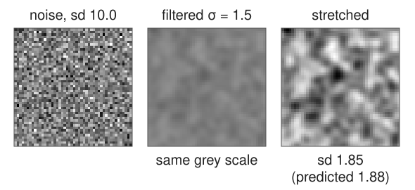
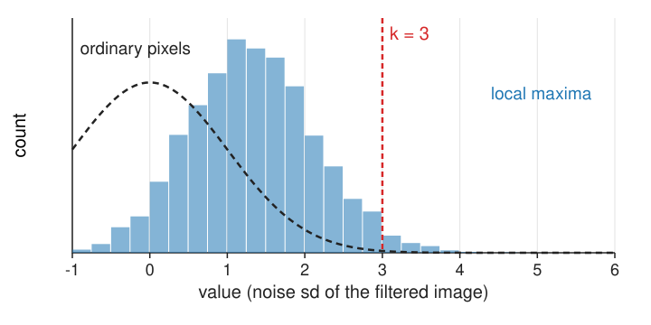
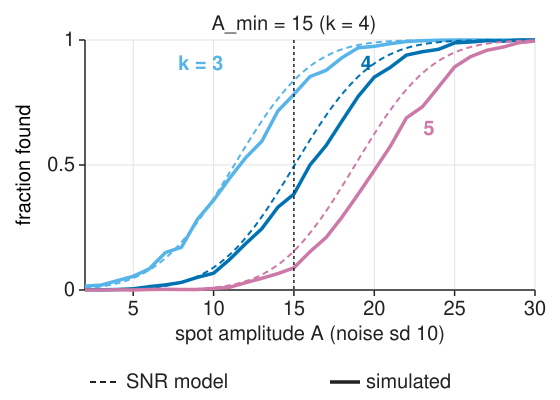
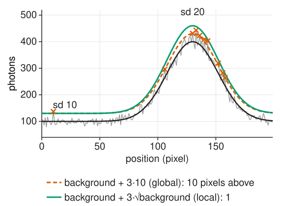

Breakdown point 50 %: up to half the values may be spots without making \hat\sigma unbounded.
On a high-pass image (w_1, or a difference of neighbours) the noise sd is a known multiple of the image noise (\sigma_n\sqrt{\sum w_k^2}), so divide by it. The background has (almost) no high frequencies and drops out.
Noise after the filter

Recall the first unit: a filter \mathbf w turns white noise of sd \sigma_n into noise of sd \sigma_n\sqrt{\sum_k w_k^2}.
Normalised Gaussian at \sigma_f = 1.5: 0.188\,\sigma_n. For \sigma_n = 10: 1.88.
Threshold the filtered image at t = k \times 1.88: for k = 4, t = 7.5.
Each filter (Gaussian, LoG, zero-mean template) has its own \sqrt{\sum w_k^2}; dividing by it makes k comparable across filters.
So far, so standard. The surprise is in the next slide.
False spots per image
In pure noise, a filtered pixel exceeds 3 sd with probability P(Z > 3) = 0.13\,\%. But we threshold local maxima:

There are many: about one per 24 \sigma_f^2 pixels, 4 862 in a 512² image at \sigma_f = 1.5.
A maximum is the largest of its neighbourhood: it is higher than a typical pixel (histogram shifted right).
Naive estimate: 4 862 × 0.13 % ≈ 6.6 false spots. Measured (20 seeded 512² noise images): 99 at k = 3, 4.3 at k = 4, 0.1 at k = 5.
k = 3 is not “safe” for spot detection. Choose k from the false-spot count you can accept.
The math: maxima above a threshold
For white noise smoothed by a Gaussian of width \sigma_f, area A pixels, threshold u (in sd), the expected Euler characteristic of the excursion set \{z > u\} (≈ the number of maxima above u when u is high; Adler, Worsley):
\sigma_f = 1.5, A = 512^2: 123 at u = 3, 5.0 at u = 4, 0.07 at u = 5 (measured: 99, 4.3, 0.1). A slightly conservative guide.
The naive (\#\text{maxima})\cdot P(Z > u) decays like e^{-u^2/2}/u; the correct count like u\,e^{-u^2/2}: it misses a factor of about u^2.
The count scales with A/\sigma_f^2, the number of “resolution elements”.
Try it: how many false spots?
The detection limit
With k fixed, the dimmest spot that reaches the threshold has a matched-filter SNR of about k (a bit more for a 50 % chance, because noise pushes it up or down):
Halving the noise (4 × the photons, recall camera noise) halves A_\text{min}.
The trade-off: a lower k finds dimmer spots and lets in more false ones. The next unit’s precision–recall curve (unit 4) makes this one picture.

The math: detection as a statistical test
Two hypotheses for a window around pixel \mathbf x: H_0: I_k = B + n_k; H_1: I_k = A p_k + B + n_k, with unknown A, B and known \sigma_n. The generalised likelihood ratio (maximise the likelihood over the unknowns under each hypothesis):
2\ln\Lambda = \frac{\big((\mathbf p - \bar p\mathbf 1)^\top\mathbf I\big)^2}{\sigma_n^2\,\|\mathbf p - \bar p\mathbf 1\|^2}.
The numerator is the zero-mean matched-filter response (unit 1); the whole statistic is its square in units of its noise sd.
Thresholding at k^2 is exactly “zero-mean matched filter > k noise sd”: the detector is not a heuristic but the optimal test (Neyman–Pearson for each pixel).
Under H_0 the statistic at a fixed pixel is \chi^2_1; at the maxima it is not (previous math slide).
Poisson noise: the noise depends on the brightness
Photon counts are Poisson (recall camera noise): the variance equals the mean. On a background of 100 photons the noise sd is 10, on 400 photons it is 20.
One global threshold k\hat\sigma is then too low on bright background (many false spots there) and too high on dark background (dim spots missed).
Local noise estimate: \hat\sigma(\mathbf x) = \sqrt{\text{gain}\cdot\text{background}(\mathbf x) + \text{read noise}^2}, with the background from a wide blur; threshold k\hat\sigma(\mathbf x).
Or a variance-stabilising transform first: 2\sqrt{x + 3/8} (the Anscombe transform) makes the noise sd ≈ 1 everywhere; then one global threshold works.

The math: Poisson and Anscombe
X \sim \mathrm{Poisson}(\mu): \mathbb E X = \mathrm{Var}\,X = \mu.
Delta method for a smooth g: \mathrm{Var}\,g(X) \approx g'(\mu)^2\,\mathrm{Var}\,X = g'(\mu)^2\mu. Constant variance needs g'(\mu) \propto 1/\sqrt\mu, so g(x) \propto \sqrt x.
The 3/8 makes the next term of the expansion small too (Anscombe 1948). Below a few photons per pixel no transform helps; use the Poisson likelihood itself.
Try it: Poisson noise
A test at every maximum
Each maximum is a statistical test; an image has thousands. “False spots per image” is the family-wise view (how many false alarms in the whole image); a false discovery rate (the fraction of detections that are false) is the alternative. Pointer: multiple testing on the evaluation day.
Choosing k in practice:
from a target false-spot count, with the formula or with blank images (no spots, same noise);
from a precision–recall curve against annotated spots (unit 4);
the à trous rule k \approx 3per level: the product over levels lowers the false rate further.
Failure modes
Problem
Why the noise model fails
What helps
correlated noise (camera patterns, an image that was smoothed or compressed)
the MAD of the raw image underestimates the noise after the filter; \sqrt{\sum w^2} assumes independent pixels
estimate the noise on the filtered image, or on blank images
a size or shape test, a zero-mean filter at the spot scale
Poisson noise
the sd depends on the brightness
local noise estimate, Anscombe transform
saturated spots
clipped tops (bit depth)
no effect on detection, but on brightness and position
Summary
Threshold in units of noise, t = k\cdot\hat\sigma_n\sqrt{\sum w^2}, with \hat\sigma_n from the MAD of a high-pass image.
Local maxima of noise are many and higher than pixels: at k = 3 a 512² image has about 100 false spots, at k = 4 about 4, at k = 5 about 0.1 (σ_f = 1.5). The normal tail is far too optimistic; the Euler formula is a good guide.
Choose k from the false spots per image you accept; the dimmest detectable spot has matched-filter SNR ≈ k.
Poisson noise: estimate the noise locally or stabilise it (Anscombe) before one global threshold.